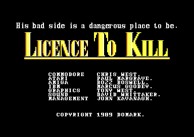
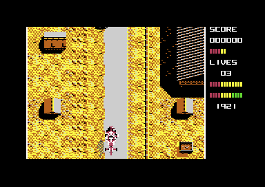
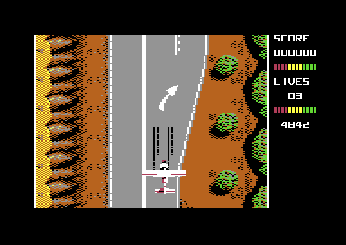

<meta charset="utf-8">
<meta name="viewport" content="width=device-width, initial-scale=1">
<title>Licence To Kill</title>
<link rel="preconnect" href="https://fonts.googleapis.com">
<link rel="stylesheet" href="https://fonts.googleapis.com/css2?family=Lato:wght@400;700;900&family=IBM+Plex+Mono:wght@400;500&display=swap">
<style>
:root{
  --bg:#23262d; --paper:#e9e7e1; --surface:#ffffff; --surface-2:#f1efea; --line:#d5d3cc; --line-soft:#e0ded8;
  --ink:#2f3136; --ink-soft:#55585f; --ink-mute:#80838a;
  --link:#1f5fa8; --link-hover:#154480; --accent:#1f5fa8;
  --amber:#c25a00; --cyan:#1f5fa8; --coral:#d04a3a; --green:#2a8a4a; --violet:#4a5bd6; --hl:#fff0c2;
  --chip:#2f3136; --chip-ink:#ffffff;
  --c64blue:#40318d; --c64grey:#686868;
  --fd:'Lato',system-ui,sans-serif; --fb:'Lato',system-ui,sans-serif; --fm:'IBM Plex Mono',ui-monospace,Menlo,monospace;
  --col:1080px; --gx:68px; --fs:17px; --lh:1.6; --hw:900; --h1:46px; --h2:26px; --sy:48px; --pp:26px; --r:10px;
  --plate-shadow:0 1px 2px rgba(0,0,0,.05),0 4px 14px rgba(0,0,0,.05);
}
*{box-sizing:border-box}
html{background:var(--bg);min-height:100%}
body{background:var(--paper);color:var(--ink);font-family:var(--fb);font-size:var(--fs);line-height:var(--lh);max-width:var(--col);margin:0 auto;min-height:100vh;padding:0 0 4rem}
h1,h2,h3{font-weight:var(--hw);letter-spacing:-.01em;text-wrap:balance;color:var(--ink);margin:0}
.wrap{padding:0 var(--gx)}
.hero{padding:48px var(--gx) 8px;text-align:left}
.eyebrow{font-family:var(--fm);font-size:12px;letter-spacing:.08em;text-transform:uppercase;color:var(--ink-mute);margin:0 0 10px}
.hero h1{font-size:var(--h1);line-height:1.15;letter-spacing:-.02em;margin:0 0 14px}
.hero .sub{margin:0 0 .6em;color:var(--ink-soft)}
section{padding:var(--sy) 0 24px}
section:last-of-type{border-bottom:none}
.fig{font-family:var(--fm);font-size:12px;letter-spacing:.08em;text-transform:uppercase;color:var(--ink-mute);margin:0 0 10px}
h2.t{font-size:var(--h2);margin-bottom:12px}
.lede{color:var(--ink-soft);margin:0 0 30px}
.plate{background:var(--surface);border:1px solid var(--line);border-radius:var(--r);padding:var(--pp);box-shadow:var(--plate-shadow)}
.cap{font-size:14px;color:var(--ink-mute);margin-top:14px;line-height:1.55}
.cap b{color:var(--ink);font-weight:700}
code{font-family:var(--fm);font-size:.82em;background:var(--chip);color:var(--chip-ink);border-radius:4px;padding:2px 6px;overflow-wrap:break-word;-webkit-box-decoration-break:clone;box-decoration-break:clone}

.ft-grid{display:grid;gap:6px}
.ft-grid button{padding:0;position:relative;line-height:0}
.ft-grid canvas{width:100%;image-rendering:pixelated;display:block}
.ft-tag{position:absolute;left:3px;top:3px;font:500 11px/1.3 var(--fm);background:rgba(255,255,255,.88);color:var(--ink);border-radius:3px;padding:1px 4px}
.ft-mark{position:absolute;right:3px;bottom:3px;font:500 10px/1.3 var(--fm);background:var(--chip);color:var(--chip-ink);border-radius:3px;padding:1px 4px}
.ft-big canvas{width:100%;max-width:768px;image-rendering:pixelated;display:block;margin:0 auto}
.ft-table{border-collapse:collapse;font-size:14px;width:100%}
.ft-table td,.ft-table th{border-bottom:1px solid var(--line-soft);padding:5px 8px;text-align:left;vertical-align:top}
.ft-two{display:grid;grid-template-columns:1fr 1fr;gap:16px;align-items:start}
.ft-four{display:grid;grid-template-columns:repeat(3,1fr);gap:12px;margin:0 0 20px}
.ft-four .plate,.ft-two .plate{margin:0;padding:12px}
.ft-shot,.ft-px{width:100%;height:auto;image-rendering:pixelated;display:block}
.ft-wide{max-width:960px;margin:0 auto}
.plate{margin:0 0 22px}
.ft-scroll{overflow-x:auto}
.ft-lab{display:block;font-family:var(--fm);font-size:13px;color:var(--ink-soft);margin:6px 0}
.ft-range{width:100%;max-width:520px;display:block}
.ft-controls{display:grid;grid-template-columns:repeat(3,1fr);gap:14px;margin:12px 0 0}
.ft-read{font-family:var(--fm);font-size:14px;background:var(--surface-2);border-radius:6px;padding:10px 12px;margin:12px 0 0}
.ft-bar-out{height:12px;background:var(--surface-2);border:1px solid var(--line);border-radius:6px;overflow:hidden;margin:10px 0 0;max-width:520px}
.ft-bar-out div{height:100%;background:repeating-linear-gradient(45deg,var(--amber) 0 6px,#e08a3c 6px 12px)}
.ft-meter{position:relative;width:110px;height:18px;background:var(--surface-2);border:1px solid var(--line);border-radius:4px;overflow:hidden}
.ft-meter span{position:absolute;left:0;top:0;bottom:0;background:var(--cyan);opacity:.35}
.ft-meter b{position:relative;font:500 12px/18px var(--fm);padding-left:6px}
.ft-objs{white-space:nowrap}
.ft-obj{display:inline-flex;flex-direction:column;align-items:center;margin:0 3px 0 0;padding:2px;background:#222;border-radius:4px;vertical-align:top}
.ft-obj i{font:500 10px/1.2 var(--fm);color:#fff;font-style:normal}
.ft-swapped{outline:2px dashed var(--amber);outline-offset:-2px}
.ft-swapped i{text-decoration:line-through;text-decoration-color:var(--amber)}
.ft-table canvas{background:#222;border-radius:4px;image-rendering:pixelated}
.ft-dead{display:flex;flex-wrap:wrap;gap:6px;margin:12px 0 0}
.ft-dead button{font-size:12px;padding:4px 8px}
@media (max-width:760px){:root{--gx:16px;--h1:36px;--pp:14px}.ft-two,.ft-four,.ft-controls{grid-template-columns:1fr}}
sup.fn{font-size:.7em;line-height:0}
sup.fn a{text-decoration:none}
sup.fn + sup.fn::before{content:","}
.overview-shot{margin:22px 0}
.overview-shot img{width:100%;max-width:768px;height:auto;aspect-ratio:384/272;image-rendering:pixelated;display:block}
.overview-shot figcaption{font-size:14px;color:var(--ink-mute);margin-top:8px;max-width:768px}
</style>
<!-- tabs -->
<header class="hero">
  <p class="eyebrow">Commodore 64 · 1989 · Domark</p>
  <h1>Licence To Kill</h1>
  <p class="sub">James Bond chases the drug lord Franz Sanchez through six scenes of the 1989 film: in a helicopter, on foot, on the end of a rope, under the sea, on water-skis, and on a stolen tanker truck. On the Commodore 64 all six fit in memory at once.</p>
</header>
<main class="wrap">

<section id="game">
  <h2 class="t">Six ways to catch Sanchez</h2>
  <p>Sanchez is a ruthless drug dealer who means to corner the world's drug market, and Bond is on his trail.<sup class="fn"><a href="about.html#src-zzap" title="Zzap!64 53">1</a></sup> The game follows the hunt through <a href="gameplay.html#levels">six scenes</a>, each scrolling up the screen.</p>
  <figure class="overview-shot"><figcaption>The title. The tagline is part of the logo picture; below it, the game's credits take turns with the high-score table. There is no loading picture.</figcaption></figure>
  <p>Bond starts in a coastguard helicopter, chasing Sanchez's jeep while guards on the ground shoot at him, and has to set the helicopter down at the end. On foot in a boatyard he turns his pistol to aim, hides behind oil drums and picks up ammunition. Then he hangs from the helicopter on a rope and must hook the tail of Sanchez's escaping plane before its fuel runs out. Under the sea he takes harpoons from Sanchez's divers, collects bags of cocaine and harpoons the pontoon of a seaplane, which tows him away on water-skis. Last, he flies the plane over a convoy of tanker trucks, jumps down onto one and rams the others off the road while dodging Stinger missiles. The <a href="gameplay.html">Gameplay</a> tab takes each in turn.</p>
  <div class="ft-two">
    <figure class="overview-shot" style="margin:0"><figcaption>The helicopter chase, eight seconds in. The panel shows the score, the energy bar, the jeep's hits bar, the lives, and the countdown.</figcaption></figure>
    <figure class="overview-shot" style="margin:0"><figcaption>The truck chase: the plane follows a tanker down the road until Bond can jump.</figcaption></figure>
  </div>
  <p>A shot or a <a href="gameplay.html#crash">crash</a> takes <a href="gameplay.html#energy">energy</a>; when the energy runs out, Bond loses a life and the level starts again. The panel says three lives, but the game goes on until the count falls below zero, so there are <a href="discoveries.html#lives">four attempts</a>. Every level has a <a href="gameplay.html#energy">countdown</a>, and whatever is left of it at the end is added to the score. After the sixth scene the game begins again with the first.</p>
</section>

<section id="people">
  <h2 class="t">The people behind the game</h2>
  <p>Domark published Licence To Kill on 20 April 1989, the year of the film.<sup class="fn"><a href="about.html#src-mi6" title="MI6-HQ">3</a></sup> The C64 version came from Quixel. The game's title pages name the team: Chris West wrote the C64 game, Tony West drew the graphics, David Whittaker made the sound, and John Kavanagh managed it. The same pages credit Paul Margrave for the Atari version, Bozz Boswell for the Amiga, and Marcus Goodey for the PC. The title text carries a line of its own, "BY QUIXEL".</p>
  <p>David Whittaker's sound fits in 4 KB of the game's memory: <a href="music.html">five tunes and 24 sound effects</a>, which you can hear on the Music tab, played by his own driver.</p>
</section>

<section id="reception">
  <h2 class="t">"Finally a Bond game worthy of the film"</h2>
  <p><i>Zzap!64</i> reviewed the C64 and Amiga versions together in issue 53, in September 1989, and gave the C64 game 80 per cent. The C64 game cost £9.99 on cassette and £14.99 on disk.<sup class="fn"><a href="about.html#src-zzap" title="Zzap!64 53">1</a></sup> One reviewer preferred it to the Amiga game, finding it "more challenging" and saying it "makes better use of the machine". Another was "surprised as to how Quixel has managed to cram so much into a one-load 64 version", and thought the sprites more detailed than the Amiga's.</p>
  <div class="ft-scroll"><table class="ft-table" style="max-width:560px">
    <thead><tr><th>Rating</th><th>C64</th><th>Zzap!64's verdict</th></tr></thead>
    <tbody>
      <tr><td>Presentation</td><td>84 %</td><td>"no multiload!"</td></tr>
      <tr><td>Graphics</td><td>81 %</td><td>"Dull backgrounds but some beautifully detailed sprites."</td></tr>
      <tr><td>Sound</td><td>65 %</td><td>"Nice intro tune and good spot effects."</td></tr>
      <tr><td>Hookability</td><td>80 %</td><td>"Instantly playable and very addictive."</td></tr>
      <tr><td>Lastability</td><td>80 %</td><td>"Six varied, challenging levels."</td></tr>
      <tr><td>Overall</td><td>80 %</td><td>"Finally a Bond game worthy of the film."</td></tr>
    </tbody>
  </table></div>
  <p>One reviewer's "only gripe" was that no single level stood out: "the appeal of the game lies in the sheer number of levels". The other found the first levels "a little dull to look at" and the second level "very tough".</p>
</section>

<section id="hidden">
  <h2 class="t">What the reviewers did not see</h2>
  <p>The six scenes are five levels in the code: the dive and the water-ski are one level, and harpooning the seaplane switches from one to the other. Crashing into scenery is not detected by the C64's collision hardware at all; each character of the scenery has a height in a table, and the game reads the heights under the helicopter (<a href="gameplay.html#crash">crashes</a>). The game also keeps a few things nobody was meant to find: <a href="discoveries.html#bond-will-return">a "BOND WILL RETURN" screen</a> for the reset button that a single wrong byte switches off, <a href="discoveries.html#tune-4">a tune that is never played</a>, and <a href="discoveries.html#unused">routines that nothing calls</a>.</p>
  <p><a href="levels.html">Scroll through all five maps</a>, <a href="graphics.html">see every sprite shape</a>, or <a href="music.html">listen to the tunes</a>.</p>
</section>

</main>

<footer style="margin:16px 0 0;padding:22px var(--gx) 0;border-top:1px solid #e0ded8;font-family:'IBM Plex Mono',ui-monospace,Menlo,monospace;font-size:12px;color:#80838a"><a href="https://github.com/gamesexplained/gamesexplained" style="color:#1f5fa8;text-decoration:none">GitHub</a> · <a href="https://discord.gg/3V9GWyRDWV" style="color:#1f5fa8;text-decoration:none">Discord</a><br>© Games Explained contributors. Write-ups, facts and symbol maps are available under <a href="https://creativecommons.org/licenses/by-sa/4.0/" style="color:#1f5fa8;text-decoration:none">CC BY-SA 4.0</a>; code under <a href="https://opensource.org/licenses/MIT" style="color:#1f5fa8;text-decoration:none">MIT</a></footer>
